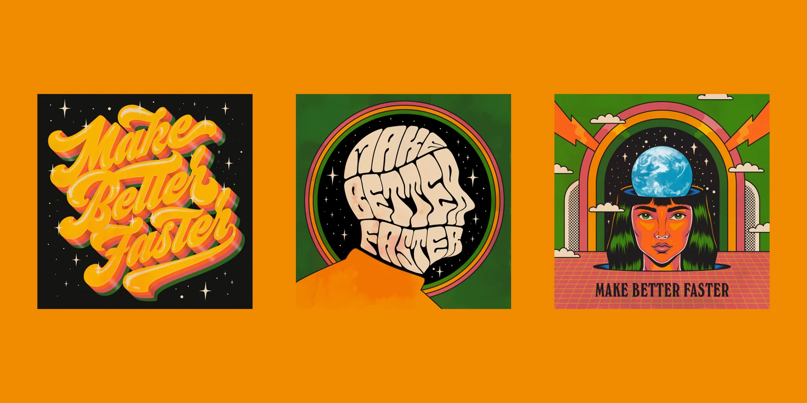

Governance Patterns for Decentralized Communities
Exploring how emergent coordination structures can enable more resilient and adaptive organizations.
Source: src/components/BlogCard.astro (blog cards) · src/components/StorySection.astro (story/glass cards) · src/styles/global.css (shadow/radius tokens) · src/styles/animations.css (hover transitions)
Source: BlogCard.astro — .blog-card with hover lift, left-border accent, image scale

Exploring how emergent coordination structures can enable more resilient and adaptive organizations.
How SuperBenefit approaches systems transformation through community-driven research and incubation.
Source: StorySection.astro — .story-card with 20px radius, 3px accent stripe, grain texture
Researching and incubating initiatives that harness emerging technologies and practices for decentralized coordination in pursuit of systems transformation.
Source: StorySection.astro — .story-featured-card / .story-grid-card with backdrop-filter: blur(12px), theme-tinted borders
Exploring coordination structures for resilient organizations.
Community-driven research and incubation approaches.